青才聚力，汇智共济
从青年出发，向未来同行。
向下探索中日之间，连接无限可能。
中日青年人才发展协会
青才聚力，
汇智共济。
以青年为起点，连接中日之间的
人才、科技与文化。
中日青年人才发展协会，以促进中日青年沟通协作、推动两国青年人才科技与文化交流为核心使命。协会理事会与核心成员由来自中日两国高校的青年学者与专业人才组成。
我们陪伴青年成长，促进人才互通，也为政府、企业、高校及科研机构搭建务实、持续的合作路径。
- 合作政企校机构
- 人才交流活动
- 活动参与人次
- 联合挂牌人才站点
据协会宣传资料整理，展示资料所载累计成果。
青年Youth
在交流现场，
遇见同行的人。
从青年活动到主题论坛，让不同经历的人相聚，分享想法、拓展视野。
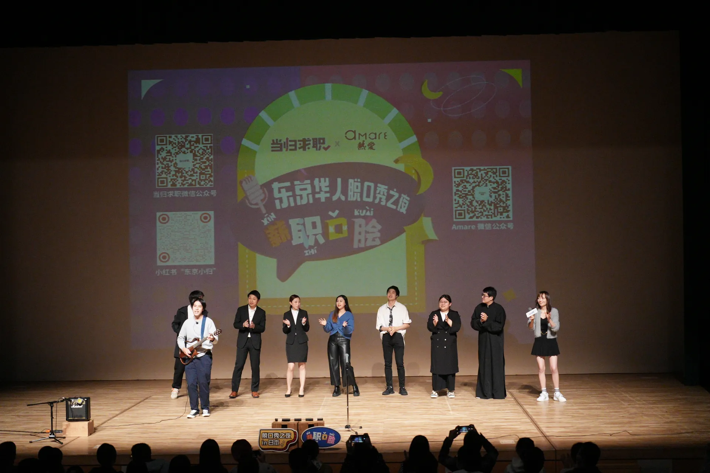
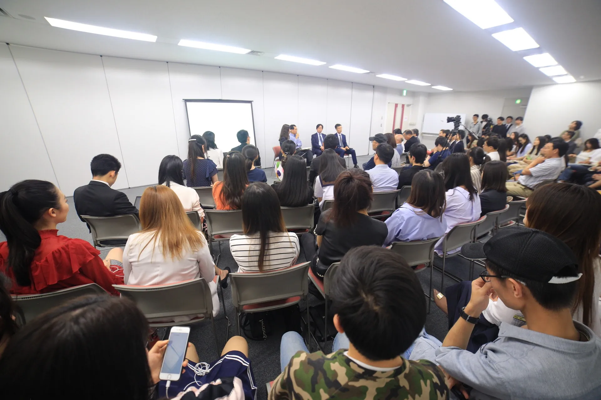
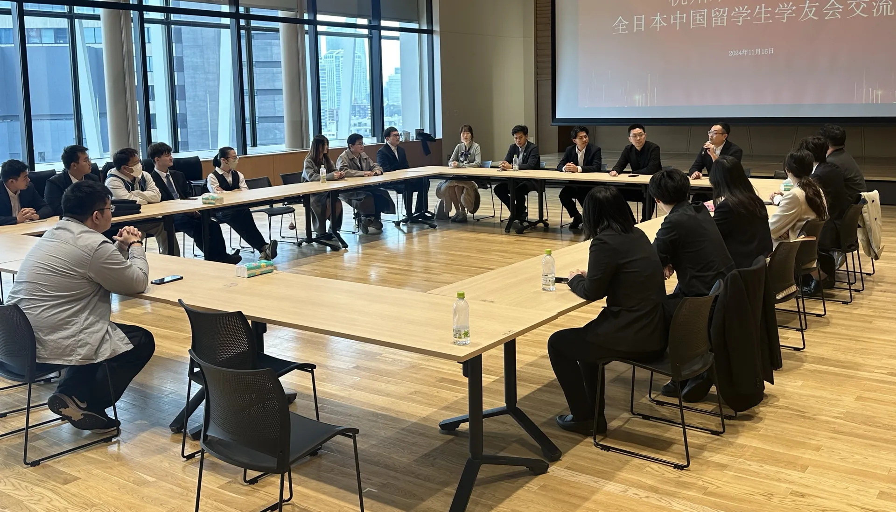
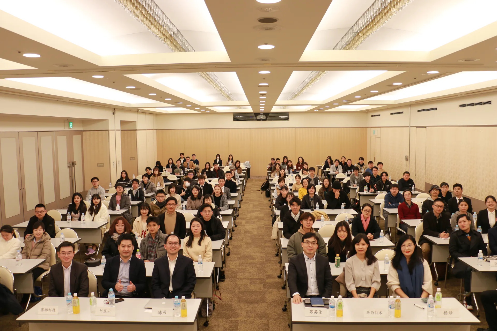
人才Talent
让才华与机会，
在这里相遇。
聚焦高校、企业与城市招聘活动，让用人单位与在日人才面对面交流。
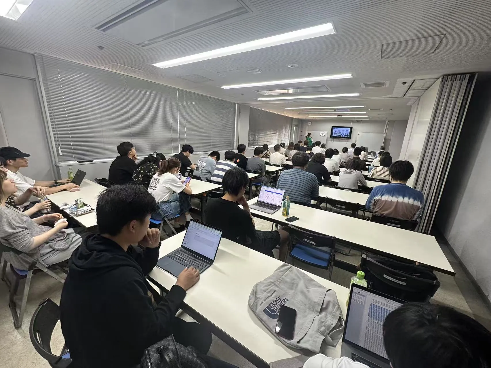
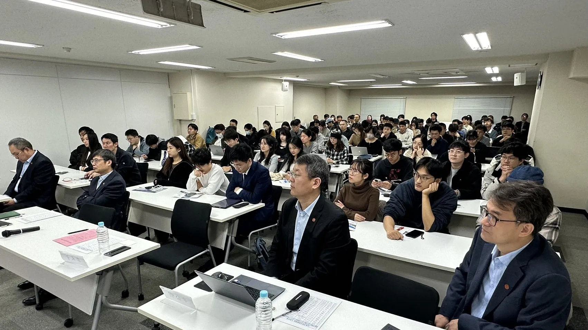
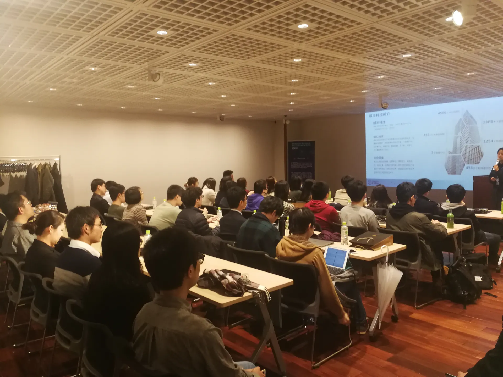
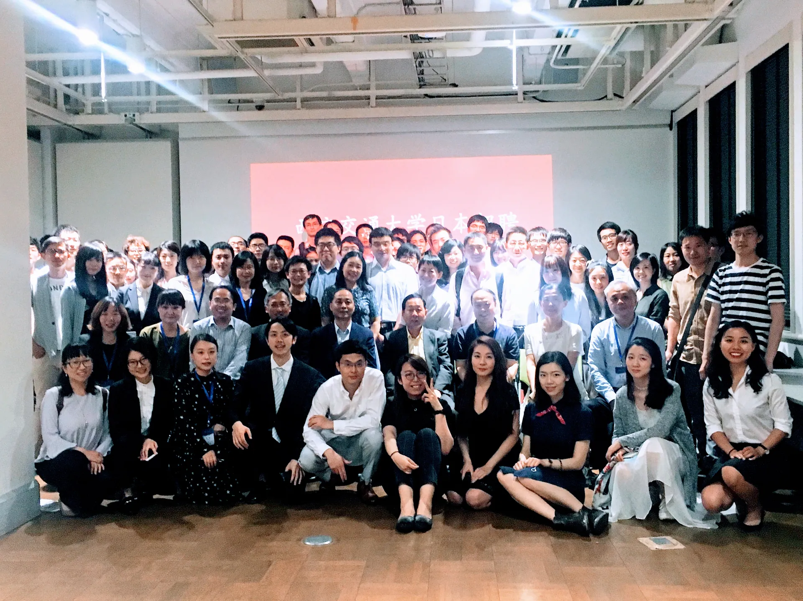
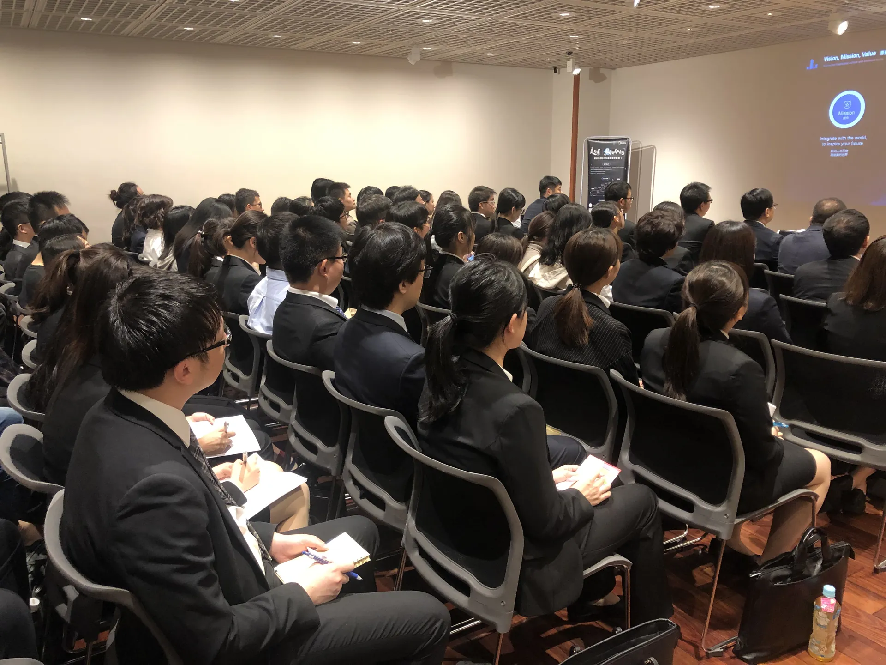
发展Development
共建合作站点，
共赴创新未来。
从青年圆桌对话，到合作站点挂牌与双创赛事，连接人才、机构和创新项目。
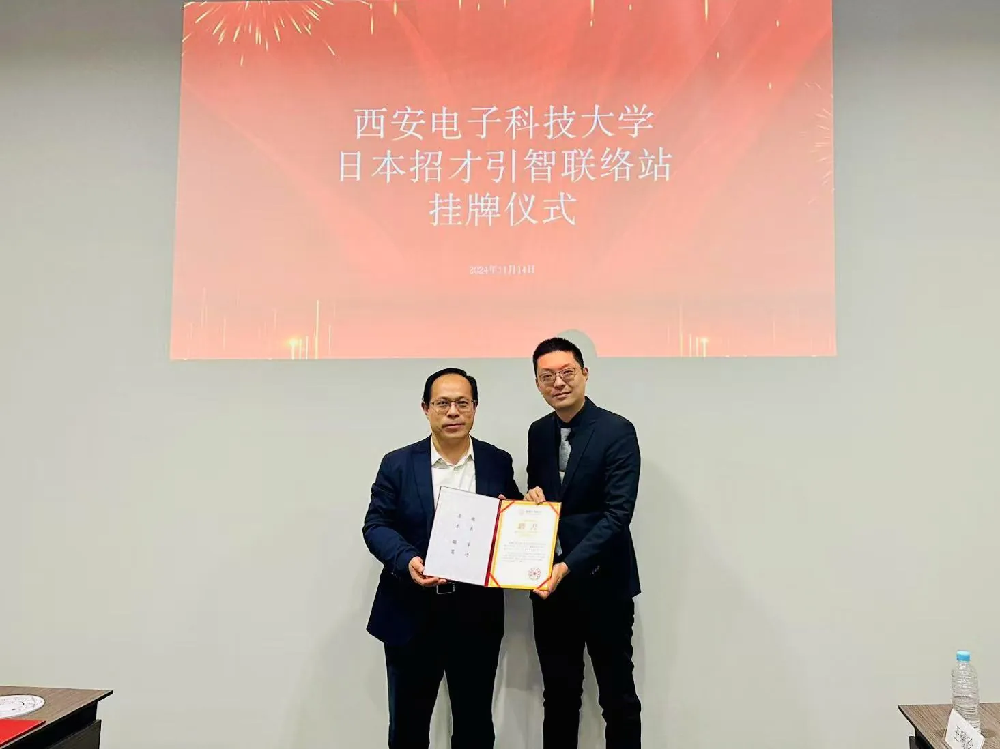
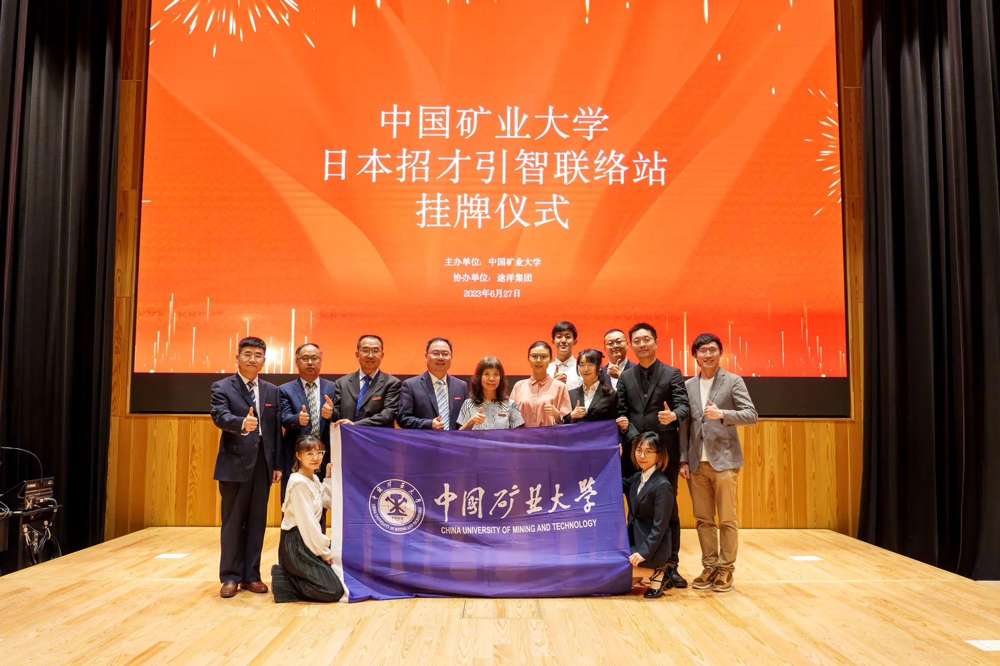
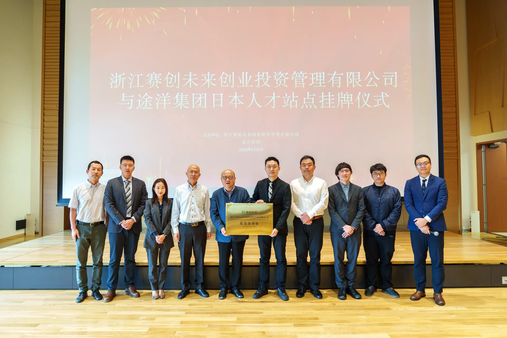
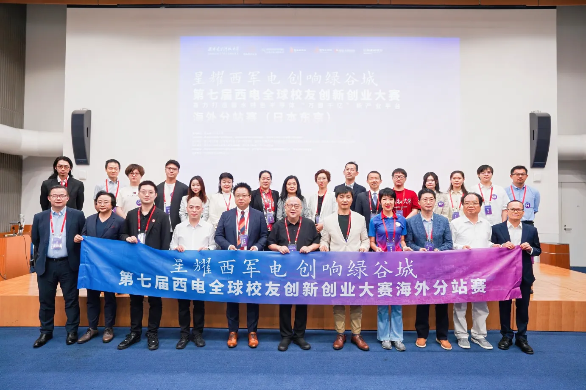
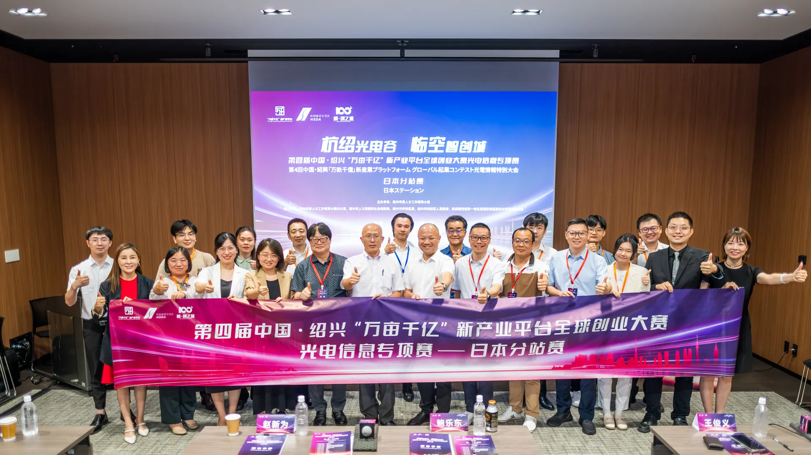
一次合作，
每一步都有回应。
- 01
需求沟通
了解目标与合作方向
- 02
方案共创
匹配资源与实施安排
- 03
在地执行
中日团队协同推进
- 04
持续跟进
回顾成果与后续合作
与青发协同行
下一次连接，
由你开启。
关于成长，关于人才，关于新的合作。
让我们从一次真诚的沟通开始。